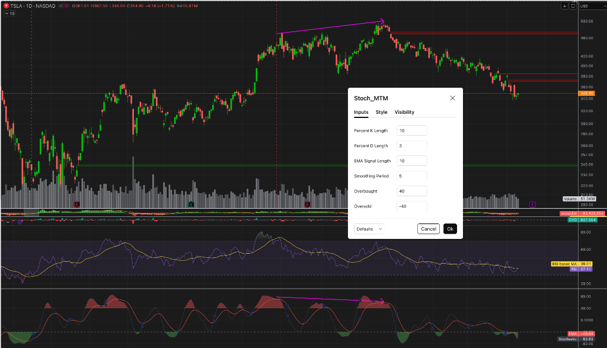

Gemini Answer
Question
SMI 在daily chart上 怎么调整参数 过滤到噪音 更可能发现真的顶部和底部
Answer

在你提供的日线图截图中，当前的参数是 10, 3, 5 (K长度10，平滑期3和5)。
为什么你现在会看到这么多密集的噪音（那么多小红峰和小绿峰）？
因为 10 作为一个日线参数实在是太短了。这等于它只计算过去过去两周的最高价和最低价。这意味着哪怕特斯拉只是经历一个正常的三天级别的小回调，SMI 就会被立刻打到超买或超卖区域，从而产生大量的“虚假”抄底逃顶信号。
要过滤掉日线级别的噪音，去抓取 真正的波段大顶和大底，你需要“拉长镜头，加大阻力”，也就是把指标参数变重、变慢。
下面为你提供两套实战中最常用的“降噪/宏观”参数组合，你可以直接在 TradingView 里替换测试：
组合一：波段过滤型 (21, 5, 8) —— 推荐⭐
这是日线上最常用的平衡型参数，专门用来抓持续 1 到 3 个月的波段大拐点。
- Percent K Length = 21 （将10改为21，代表刚好覆盖大约一个交易月的高低点跨度）
- Percent D Length = 5 （稍微增强平滑度）
- Smoothing Period = 8 （增强二次平滑因子，过滤日内插针）
- 效果： 采用这套参数后，图表上下边沿的碎渣小峰会神奇地消失，SMI 会变成很长、很平滑的大波浪。只有级别足够大的上涨或下跌，才能让它去触碰
+40或-40的极限。
组合二：宏观趋势型 (50, 8, 13)
如果你想做大周期的“左侧抄大底”或者“见大顶必跑”，可以采用这套迟钝但极具杀伤力的参数。
- Percent K Length = 50 （拉长到接近两个半月的跨度，这恰好是很多庄家建仓和派发的周期）
- Percent D / Smoothing = 8, 13 （使用强平滑过滤）
- 效果： 这套参数下，SMI 可能一年只有 2 到 3 次 能摸到
+40或-40。但一旦它到了极限并且发生了死叉或顶底背离，那往往是历史级别的主升浪结束，或者惨烈暴跌的主跌浪结束。
💡 核心调整逻辑（授人以渔）：
- 想过滤震荡噪音：先改
K Length
把窗口期加大（从 10 放大到 20以上）。这就相当于把池子挖深了，扔个小石子（日内随机暴涨暴跌）激不起浪花，只有大风暴才能掀动指标。 - 想指标曲线圆滑无死角：改
D和Smoothing周期
如果你发现指标上下乱穿 0 轴导致频繁的金叉死叉，就把这两个 EMA 参数放大。通常使用斐波那契数列（如 3,5 换成 5,8 或 8,13）可以让曲线拥有完美的物理惯性，不容易被一两天的假阴或假阳线骗出系统。
建议接下来的操作：
你现在就在图表里打开设置，把 10, 3, 5 分别改成 21, 5, 8。然后你对比一下在这个垂直红线虚线处的形态，你会发现那些小级别的虚假超卖全被抹平了，而真正的宏观顶部/背离结构会被拉勒得异常清晰！